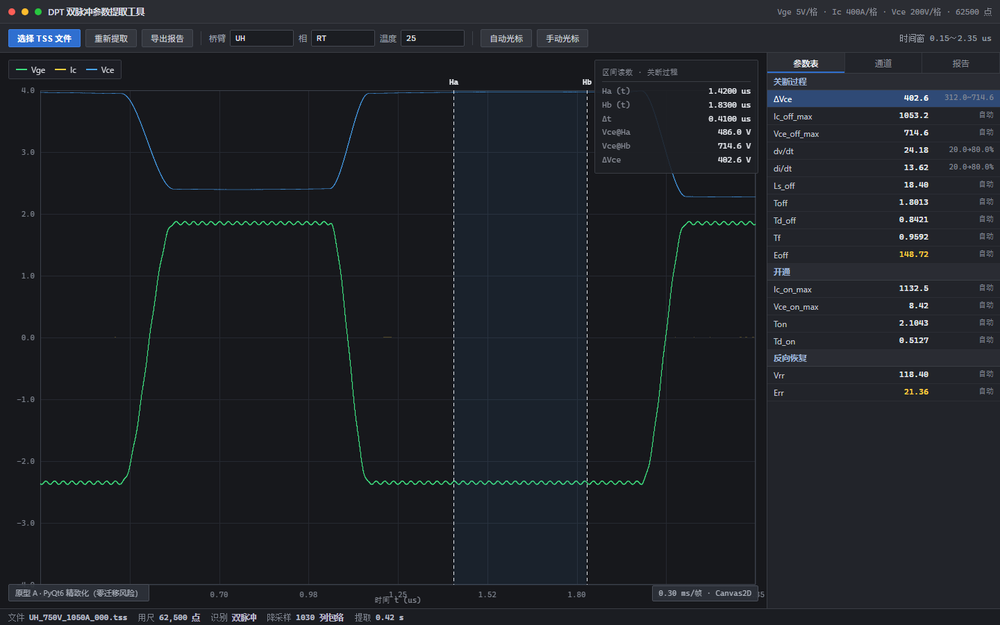
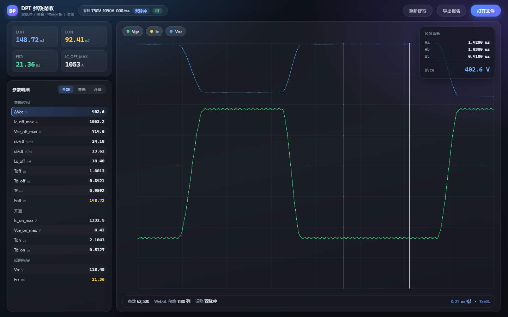
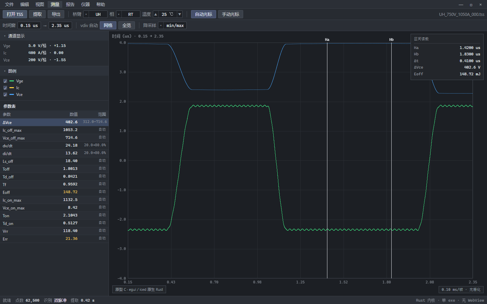

data.mjs 的数据生成、vdiv/yPosition 换算、min/max 包络降采样与参数表。
因此差异只来自技术栈与视觉语言，可直接横向比较审美上限与实现成本。
requestAnimationFrame，
因此原型内只显示 ms/帧、不显示 FPS。真实交互帧率必须在有显示的机器上实测，
这是前端决策的未完成验证项。

| 迁移成本 | 零 |
| 绘制成本 | 0.40 ms/帧 · Canvas2D |
| 风险 | 低 |
| 前置条件 | 先拆分 main_window.py(11 368 行) |

| 迁移成本 | 最高（重写 25 981 行 GUI） |
| 绘制成本 | 0.27 ms/帧 · WebGL |
| 风险 | 高 |
| 新增依赖 | WebView2 运行时 |

| 迁移成本 | 极高（连渲染层重建） |
| 绘制成本 | 0.10 ms/帧 · 光栅化 |
| 风险 | 高 |
| 待验证 | 中文排版、高分屏 |
node build.mjs（内联数据层）→ node shoot.mjs（截图）